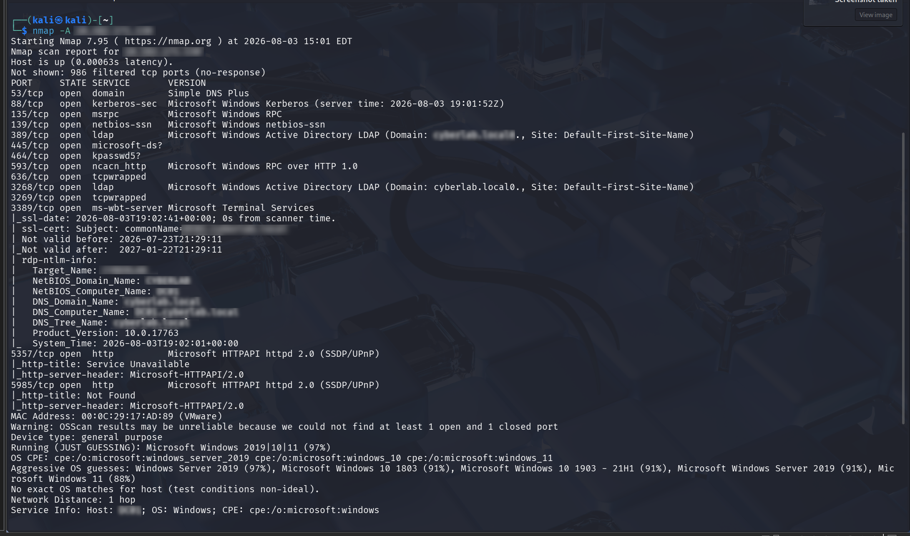
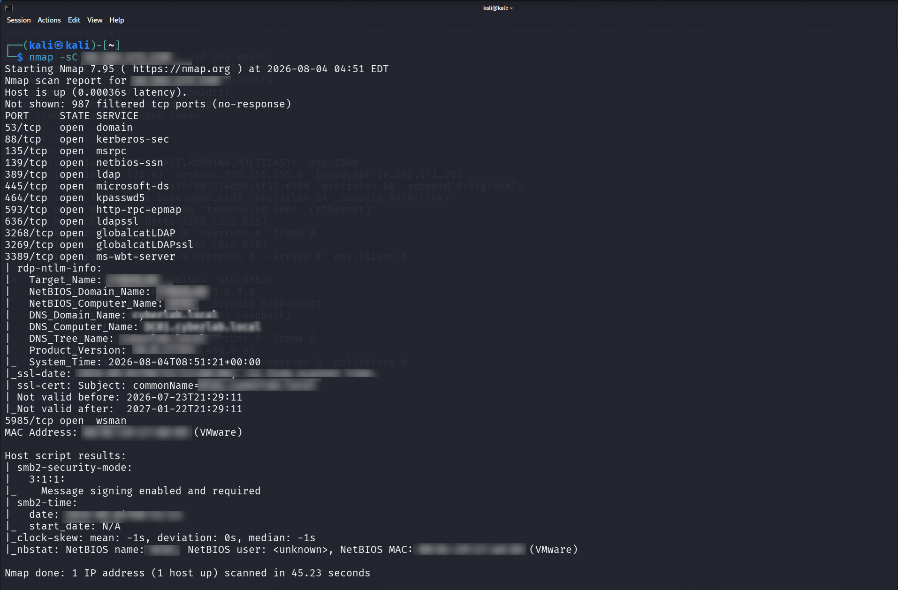

This project documents my first complete Windows Server enumeration exercise using Nmap and the Nmap Scripting Engine (NSE). The objective was to perform professional reconnaissance and service enumeration using a structured methodology rather than simply executing individual commands.
As someone transitioning into cybersecurity, I wanted practical experience that complements my certifications. This project demonstrates my ability to identify services, analyze network information and document findings professionally.
Practical experience is essential in cybersecurity. I created this home lab to gain hands-on experience using Nmap for reconnaissance and enumeration while learning how cybersecurity professionals assess enterprise systems.
The assessment successfully identified Windows services including:
Multiple NSE scripts were executed to enumerate services and gather additional host information. No significant vulnerabilities were identified within the lab environment.
During testing, the Windows Server virtual machine received a different IP address which caused several scans to fail. After validating the environment and confirming connectivity, the enumeration completed successfully. This reinforced the importance of verifying the lab before assuming a security issue exists.
The screenshots below demonstrate the key stages of the enumeration process.


This project marks the beginning of my practical cybersecurity portfolio. My next objective is to expand my network monitoring skills through Wireshark packet analysis and SOC investigations.
Completing this project significantly improved my confidence in using Nmap, interpreting scan results and documenting technical findings. It represents an important milestone in my journey toward becoming a Junior SOC Analyst.